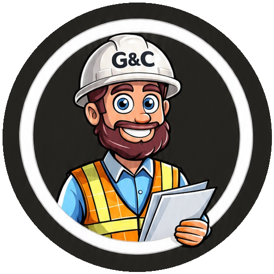

Gestão & ControlePolítica de Privacidade
Esta Política explica, em linguagem direta, quais dados pessoais o G&C (https://gestaoecontrole.app.br) trata, para quê, com quem compartilha, por quanto tempo guarda e como você exerce seus direitos, conforme a Lei nº 13.709/2018 (LGPD) e a Lei nº 12.965/2014 (Marco Civil da Internet).
1. Quem é o responsável
1.1. Marcelo Javier Bonet, MEI, CNPJ 67.773.311/0001-64, Rua 7 de Setembro, 230, Periperi, Salvador/BA.
1.2. Canal de atendimento ao titular: info@gestaoecontrole.app.br. Como agente de tratamento de pequeno porte (Resolução CD/ANPD nº 2/2022), não indicamos encarregado formal; este e-mail é o canal de comunicação com os titulares e com a ANPD.
2. Dois papéis diferentes
2.1. O G&C é controlador dos dados de cadastro e acesso (nome, e-mail, senha, CPF, PIN, dados do login com Google), dos registros de acesso e dos contatos deixados no formulário de interesse.
2.2. O G&C é operador dos dados que cada empresa-cliente e sua equipe registram nas obras: equipe, funções, presença, etapas, materiais, ferramentas, pedidos, observações, fotos, documentos, clientes e endereços de obras. Para esses dados, a controladora é a empresa que usa o G&C. Pedidos sobre eles devem ser feitos, de preferência, à própria empresa; se você nos procurar, encaminharemos o pedido a ela.
3. Quais dados tratamos
| Categoria | Dados | Como obtemos |
|---|---|---|
| Cadastro | Nome, e-mail, senha (guardada só como hash) e se o e-mail já foi confirmado | Você informa. Para ativar a conta, enviamos um link de confirmação ao seu e-mail |
| Login com Google | Nome e e-mail da sua conta Google | Google, com sua autorização (escopos openid, email, profile). Não guardamos foto de perfil nem acessamos outros dados da sua conta Google |
| Drive Backup (só o Dono, se ele quiser) | Permissão para criar arquivos no Google Drive do próprio Dono (escopo drive.file: o G&C só enxerga os arquivos que ele mesmo criou, nunca o resto do Drive) | Autorizada pelo Dono na tela do Google ao tocar em "Drive Backup". A autorização fica só no aparelho, por cerca de 1 hora; não guardamos nada dela no servidor. O backup vai do aparelho direto para o Drive do Dono, na pasta "G&C backup"; o G&C guarda ali os 10 mais recentes e manda os mais antigos para a lixeira do Drive |
| Acesso por CPF | CPF — não guardamos o número completo: só uma "impressão digital" criptográfica (para reconhecer você no login) e a versão mascarada (ex.: 123.***.***-45) —, PIN (guardado só como hash, com chave secreta), tentativas erradas e bloqueio temporário | Você informa ao aceitar o convite ou criar seu PIN |
| Aceite dos Termos | Versão aceita e data/hora do aceite | Registrado quando você aceita |
| Registros de acesso | Endereço IP, data e hora, navegador e forma de entrada (senha, CPF, Google, convite) | Registrados a cada entrada no aplicativo |
| Convites | Nome, rank, função e, opcionalmente, telefone e e-mail da pessoa convidada; obra | Informados por quem convida, antes de a pessoa entrar no G&C |
| Trabalho na obra | Rank, função, obras de que participa, datas de presença, pedidos enviados e recebidos, etapas concluídas ("✓ por Fulano") | Registrados por você ou pela sua equipe |
| Livro de obra | Texto das observações, autor, rank do autor no momento, data e hora, versões anteriores editadas | Registrados pelos usuários |
| Fotos e documentos | Fotos de avanço, PDF, Word, Excel, JPG, PNG e o que estiver neles, inclusive imagens de pessoas | Enviados pelos usuários |
| Obras | Nome do cliente, endereço, tipo, data de início | Registrados pela empresa |
| Perguntas ao assistente de Ajuda | O texto da pergunta, as últimas mensagens da conversa e o seu rank (sem nome, e-mail ou CPF) | Você escreve na tela Ajuda. Não guardamos as perguntas: são enviadas ao modelo de IA só para gerar a resposta |
| Formulário de interesse | Nome, empresa, e-mail ou WhatsApp | Você informa (ex.: feira ConstruNordeste) |
| Dados no seu aparelho | Sessão de acesso (válida por 30 dias), preferências (tema, modo de login, última tela), identificador do desbloqueio biométrico | Guardados no armazenamento local (localStorage) do seu navegador |
Não coletamos: sua localização por GPS, sua biometria (o desbloqueio por digital ou rosto acontece só no seu aparelho), dados de pagamento. Também não usamos cookies de publicidade nem ferramentas de análise.
Atenção a arquivos: fotos de avanço são reduzidas no seu aparelho antes do envio, o que remove metadados como localização. Arquivos enviados em "Documentos" são guardados exatamente como foram enviados, e uma foto JPG pode conter a localização em que foi tirada. Evite enviar documentos com dados sensíveis (ex.: atestados médicos) sem necessidade.
4. Para que usamos e com qual base legal
| Finalidade | Base legal (LGPD) |
|---|---|
| Criar e manter sua conta, autenticar você (senha, Google, CPF+PIN) e prestar o serviço | Execução de contrato (art. 7º, V) |
| Operar os módulos da obra para a empresa-cliente | Tratamento em nome da empresa (operador), conforme a base legal dela |
| Segurança: limitar tentativas de senha e PIN, impedir acesso de contas excluídas, prevenir fraudes | Legítimo interesse (art. 7º, IX) e prevenção à fraude |
| Responder dúvidas no assistente de Ajuda | Execução de contrato (art. 7º, V) |
| Guardar os registros de acesso por 6 meses | Cumprimento de obrigação legal (art. 7º, II; Marco Civil, art. 15) |
| Guardar o registro do seu aceite dos Termos | Execução de contrato e exercício regular de direitos (art. 7º, V e VI) |
| Manter, sem identificação ("Usuário removido"), os registros de quem teve a conta excluída no histórico da obra | Dados anonimizados deixam de ser dados pessoais (art. 12); o histórico da obra é mantido no interesse da empresa-cliente |
| Guardar nome e contato de quem foi convidado e ainda não entrou | Legítimo interesse da empresa que convidou, para permitir o acesso |
| Contatar quem preencheu o formulário de interesse sobre o G&C | Consentimento (art. 7º, I), que pode ser revogado a qualquer momento |
| Cumprir obrigações legais e ordens judiciais | Obrigação legal (art. 7º, II) |
Não vendemos dados pessoais e não os usamos para publicidade.
5. Com quem compartilhamos
- Pessoas da sua empresa: o que você registra é visível para quem tem acesso à obra, conforme rank, Permissões e bloqueios definidos pela empresa. O Dono e o Engenheiro Chefe veem todas as obras da empresa.
- Quem tem o link de convite: ao abrir o link, vê seu nome, rank, função e o cliente da obra, enquanto o link for válido (7 dias, uso único).
- Provedores de infraestrutura (operadores):
- Cloudflare, Inc. (EUA): hospedagem, rede, DNS, e-mail de contato, verificação anti-robô (Turnstile, no cadastro, no formulário de interesse e após várias senhas erradas), armazenamento de fotos e documentos e o modelo de inteligência artificial do assistente de Ajuda (Workers AI). As perguntas enviadas ao assistente não são usadas por nós para outros fins.
- Neon, LLC (EUA, grupo Databricks): banco de dados.
- Google LLC: login com Google, fontes tipográficas e, se o Dono escolher, cópia de segurança no Google Drive dele.
- Resend, Inc. (EUA): envio dos e-mails automáticos do G&C — confirmação de e-mail e link para criar nova senha. Recebe só o seu nome e e-mail e o texto da mensagem; o G&C não envia propaganda.
- WhatsApp (Meta): quando você usa os botões de convite ou de relatório, a mensagem é enviada pelo seu WhatsApp, sob as regras do WhatsApp. O G&C não envia mensagens por conta própria.
- Autoridades: quando exigido por lei ou ordem judicial.
6. Transferência internacional
Os provedores acima armazenam e processam dados fora do Brasil, principalmente nos Estados Unidos. A transferência ocorre para executar o contrato com você (art. 33, IX, c/c art. 7º, V) e com base nas garantias contratuais oferecidas por esses provedores. O banco de dados fica na região AWS us-east-2 (Ohio, EUA).
7. Por quanto tempo guardamos
| Dado | Por quanto tempo |
|---|---|
| Conta ativa e dados das obras | Enquanto a conta e a empresa existirem |
| Conta excluída | Nome, e-mail, CPF, senha, PIN e telefone são apagados na hora. Os registros feitos nas obras permanecem sem identificação, assinados como "Usuário removido" |
| Empresa encerrada | Pedido do Dono a suporte@gestaoecontrole.app.br. Apagamos a empresa, suas obras, fotos, documentos e contas em até 15 dias, exceto o que a lei nos obrigue a guardar (ex.: registros de acesso por 6 meses) |
| Convites | Apagados assim que usados. Convites não usados são apagados automaticamente 30 dias depois de vencerem (vencem em 7 dias) |
| Registros de acesso | 6 meses; depois são apagados automaticamente |
| Fotos e documentos | Apagados do armazenamento junto com o documento, a foto, a etapa ou a obra a que pertencem. Arquivos apagados antes de 29/09/2026 podem permanecer até uma limpeza técnica |
| Formulário de interesse | Até você pedir a exclusão |
| Dados no seu aparelho | Até você sair da conta ou limpar os dados do navegador; a sessão expira em 30 dias |
Cópias de segurança: uma vez por semana é feita uma cópia automática da base de dados (sem fotos e documentos), enviada ao e-mail do responsável pelo G&C e guardada por até 90 dias. Dados excluídos do aplicativo podem permanecer nessas cópias até elas serem apagadas.
Mesmo após um pedido de exclusão, poderemos manter dados pelo tempo necessário para cumprir obrigação legal ou exercer direitos em processos (art. 16 da LGPD).
8. Seus direitos
Você pode pedir, pelo canal info@gestaoecontrole.app.br (art. 18 da LGPD):
- confirmação de que tratamos seus dados e acesso a eles;
- correção de dados incompletos ou errados;
- anonimização, bloqueio ou eliminação de dados desnecessários ou tratados em desacordo com a lei;
- portabilidade;
- informação sobre com quem compartilhamos;
- revogação do consentimento (formulário de interesse);
- eliminação dos dados tratados com consentimento;
- revisão e oposição a tratamentos baseados em legítimo interesse.
Como funciona hoje:
- Excluir a própria conta: pelo aplicativo, em Configurações (exceto o Dono).
- Dono que queira encerrar a empresa e apagar seus dados: pelo suporte, em suporte@gestaoecontrole.app.br, a partir do e-mail da conta.
- Acesso e portabilidade: pelo aplicativo, em Configurações → Exportar meus dados (página para ler ou imprimir e arquivo JSON).
- Qualquer outro pedido: por e-mail, em info@gestaoecontrole.app.br.
- Responderemos em até 15 dias. Podemos pedir informações para confirmar sua identidade. Para dados das obras, em que atuamos como operador, envolveremos a empresa controladora.
Você também pode reclamar à Agência Nacional de Proteção de Dados (ANPD): https://www.gov.br/anpd.
9. Segurança
9.1. Adotamos, entre outras medidas:
- conexão criptografada (HTTPS);
- senhas e PINs guardados só como hash (PBKDF2);
- bloqueio temporário e progressivo após tentativas erradas de senha ou PIN (15 minutos, depois 1 hora, depois 24 horas);
- sessões com validade de 30 dias, que caem em todos os aparelhos ao trocar a senha ou o PIN;
- confirmação do e-mail antes do primeiro acesso com senha, e links de nova senha de uso único, válidos por 1 hora;
- CPF guardado só como "impressão digital" criptográfica e versão mascarada, nunca o número completo;
- PIN e senha protegidos com hash e, no caso do PIN, também com uma chave secreta guardada fora do banco de dados;
- separação de dados por empresa;
- controle de acesso por rank e por obra, inclusive para fotos e documentos.
9.2. Nenhum sistema é totalmente seguro. Em caso de incidente de segurança que possa gerar risco ou dano relevante, comunicaremos a ANPD e os titulares afetados nos prazos da regulamentação.
9.3. Você também protege seus dados:
- não compartilhe senha ou PIN;
- não use no PIN números do seu CPF ou da sua data de nascimento;
- saia da conta em aparelhos compartilhados.
10. Menores de idade
O G&C não é destinado a menores de 18 anos e não permite, por seus Termos, o cadastro ou o convite de menores. Hoje não há verificação automática de idade. Se soubermos que há dados de um menor, eles serão excluídos. Avise-nos pelo canal de contato.
11. Registros de acesso
Como exige o Marco Civil da Internet (art. 15), guardamos os registros de acesso ao aplicativo (endereço IP, data e hora) por 6 meses, em ambiente controlado e de acesso restrito. Depois disso eles são apagados automaticamente. Só os fornecemos a terceiros mediante ordem judicial.
12. Dados do Google
O uso de informações recebidas das APIs do Google segue a Política de Dados do Usuário dos Serviços de API do Google, incluindo os requisitos de Uso Limitado. O acesso ao Google Drive serve só para gravar as cópias de segurança que o Dono pede; não lemos, não analisamos e não compartilhamos nenhum outro conteúdo do Drive.
Usamos apenas nome e e-mail, só para criar e identificar sua conta. Não os compartilhamos com terceiros, a não ser os provedores de infraestrutura listados acima, e não os usamos para publicidade.
13. Alterações
Podemos atualizar esta Política. A data no topo sempre indica a versão vigente, e mudanças relevantes serão avisadas no aplicativo, que pedirá um novo aceite.
14. Contato
Privacidade e assuntos gerais: info@gestaoecontrole.app.br · Suporte e encerramento de empresa: suporte@gestaoecontrole.app.br
Marcelo Javier Bonet – MEI · CNPJ 67.773.311/0001-64